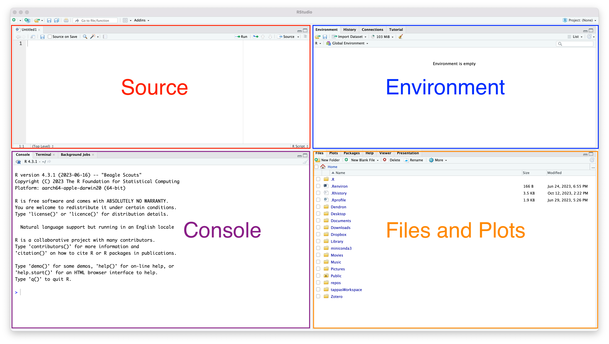
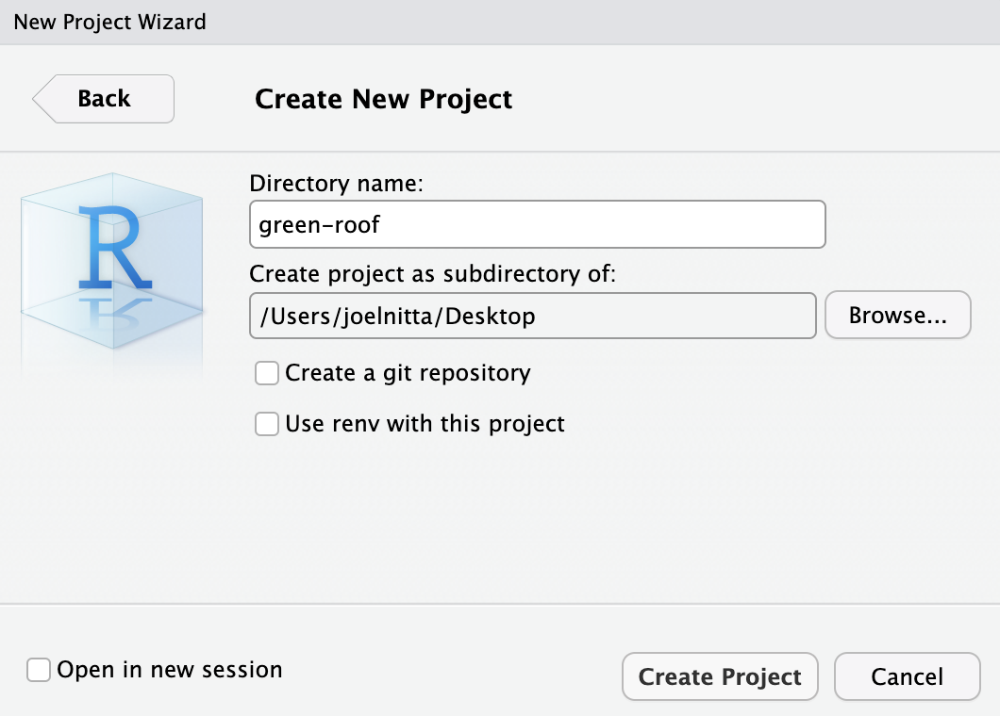
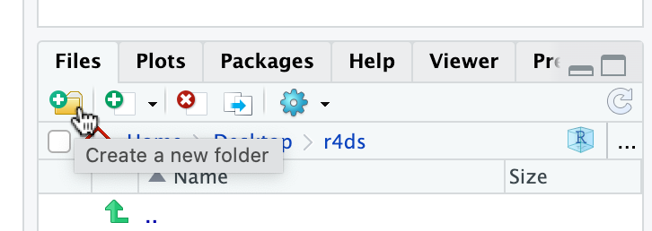
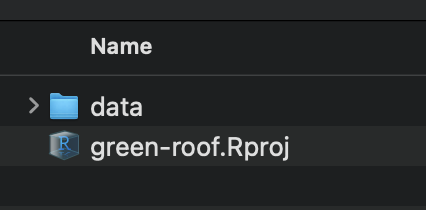
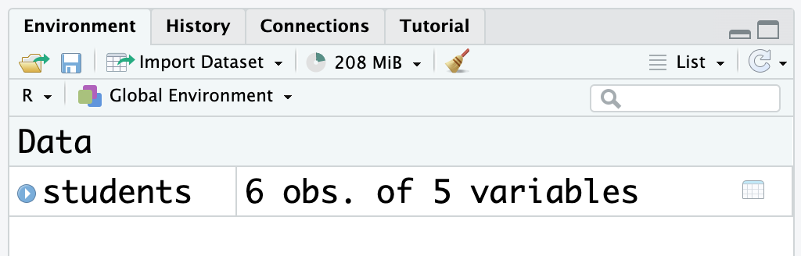
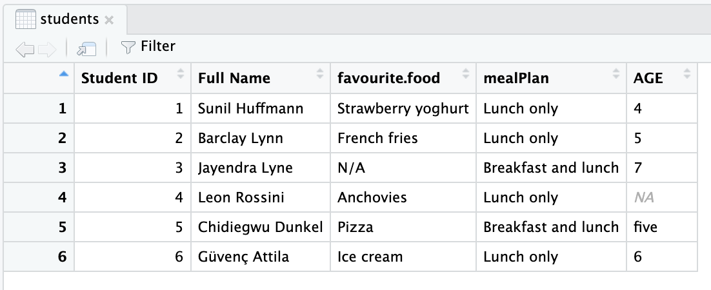
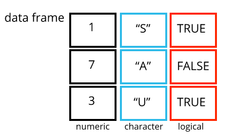

2 * 20[1] 40オンデマンド
https://joelnitta.github.io/cross-major-project-is2/
. . .
他の人（将来の自分を含めて）があなたの解析を
再度行って、同じ結果を得ることができること
データサイエンスにおいて、とても重要。再現性がなければ、「サイエンス」にならない！


https://cloud.r-project.org/から自分のOSに合ったファイルをダウンロードして、インストール
https://posit.co/download/rstudio-desktop/から自分のOSに合ったファイルをダウンロードして、インストール
ご連絡下さい（joelnitta@chiba-u.jp）

2 * 20[1] 40おめでとうございます！Rプログラミングができました！
age <- 2 * 20これだけでは何も返ってこない。
変数の内容を確認するには、コンソールにその変数の名前を打てば良い：
age[1] 40何かの値（インプット）を受けて、処理して、計算結果（アウトプット）を返すもの
関数の書き方：
例えば
round(3.1415, digits = 1)[1] 3.1関数の使い方を確認したい時は?関数名と打って、ヘルプファイルを参照すれば良い
?roundRパッケージのインストールを行うには、install.packages()を使う：
install.packages("ggplot2")一回インストールしたら、次回からはしなくて良いので、これはコードとして保存しない
library()関数でロードする：
library(ggplot2)tidyverseはデータサイエンス用パッケージの集まりのパッケージ
ggplot2（可視化）dplyr（データの整理）stringr（文字データを扱う）これからよく使うので、インストールしましょう。一気に出来るから、楽。
install.packages("tidyverse")install.packages()とlibrary()の違いinstall.packages()は一回だけで良い（パソコンにパッケージをダウンロードする）
library()はRを使う毎にしないといけない（パッケージを今回のRのセッションで使えるようにする）
スクリプトとデータを整理する必要がある
RStudioの「Project」機能によって、スクリプトとデータ（など）の整理ができる
File ➡︎ New Project ➡︎ New Directory ➡︎ New Project をクリック
green-roofにしましょう）
プロジェクト名の入力が終わると、RStudioが再度立ち上がる
ファイルパネル（右下）をよく見てください。今はRがどこに「います」か？
dataというフォルダーを作りましょう

新しいプロジェクトには、green-roof.Rprojファイルが入っている
.Rprojファイルの中身はは基本的に触らない

今までは直接Rにコマンドを出していたけど、毎回そうするのは効率が良くない。
作業を繰り返す場合や再現する場合はスクリプト(テキストファイル)が必要。
Rスクリプトの拡張は.Rか.r。
File ➡︎ New File ➡︎ R ScriptをクリックFile ➡︎ Save As...をクリックかファイルのアイコンをクリック。以下のコードをスクリプトに書いて、script.Rとしてデスクトップに保存しましょう（コードの詳細はまた後で学ぶ）。
library(tidyverse)
ggplot(diamonds, aes(x = carat, y = price)) +
geom_hex()カーソルが現在位置している行をコンソールに送る：Ctrl（あるいは⌘） + Enter
今開いているスクリプトの行を全てコンソールに送る：Ctrl（あるいは⌘） + Shift+ Enter
スクリプトに間違いが入っている場合、RStudioはそれを教えてくれる（バツマークと赤い線）：

以下のコードを書いて、スクリプトをdiamonds.Rとしてgreen-roofプロジェクトに保存して、実行しましょう：
library(tidyverse)
ggplot(diamonds, aes(x = carat, y = price)) +
geom_hex()
ggsave("diamonds.png")このスクリプトは何をするのでしょうか？
diamonds.Rはdiamonds.pngというグラフを作る。. . .
diamonds.pngを消しましょう。. . .
diamonds.Rを実行してください（Ctrl（あるいは⌘） + Shift+ Enter）. . .
. . .
まずは練習としてからグーグドライブからstudents.csvをダウンロードして、data/に置きましょう。
.csvはcomma separated valuesの略です
.xslxとの違いは、.csvはそのままどのテキストエディターでも開ける（エクセルがいらない）read_csv()関数で読み込むまずは、読み込んでから直接に中身を見てみましょう：
read_csv("data/students.csv")Rows: 6 Columns: 5
── Column specification ────────────────────────────────────────────────────────
Delimiter: ","
chr (4): Full Name, favourite.food, mealPlan, AGE
dbl (1): Student ID
ℹ Use `spec()` to retrieve the full column specification for this data.
ℹ Specify the column types or set `show_col_types = FALSE` to quiet this message.# A tibble: 6 × 5
`Student ID` `Full Name` favourite.food mealPlan AGE
<dbl> <chr> <chr> <chr> <chr>
1 1 Sunil Huffmann Strawberry yoghurt Lunch only 4
2 2 Barclay Lynn French fries Lunch only 5
3 3 Jayendra Lyne N/A Breakfast and lunch 7
4 4 Leon Rossini Anchovies Lunch only <NA>
5 5 Chidiegwu Dunkel Pizza Breakfast and lunch five
6 6 Güvenç Attila Ice cream Lunch only 6 でも、これだけではRの環境にそのデータが入っていません
変数（オブジェクト）として保存する必要がある：
students <- read_csv("data/students.csv")Rows: 6 Columns: 5
── Column specification ────────────────────────────────────────────────────────
Delimiter: ","
chr (4): Full Name, favourite.food, mealPlan, AGE
dbl (1): Student ID
ℹ Use `spec()` to retrieve the full column specification for this data.
ℹ Specify the column types or set `show_col_types = FALSE` to quiet this message.
変数として保存する時は中身が見えない（オブジェクトに渡された）
中身を見たい時は変数名を直接コンソールに入力すればいい
students# A tibble: 6 × 5
`Student ID` `Full Name` favourite.food mealPlan AGE
<dbl> <chr> <chr> <chr> <chr>
1 1 Sunil Huffmann Strawberry yoghurt Lunch only 4
2 2 Barclay Lynn French fries Lunch only 5
3 3 Jayendra Lyne N/A Breakfast and lunch 7
4 4 Leon Rossini Anchovies Lunch only <NA>
5 5 Chidiegwu Dunkel Pizza Breakfast and lunch five
6 6 Güvenç Attila Ice cream Lunch only 6 このような時に使う：データの中身を確認したい、ヘルプファイルを開きたい、など。
つまり、データ解析に必要ではない（関係のない）コマンド。
もう一つのデータの確認の仕方がある：「Environment」パネルでそのオブジェクトをクリック
すると、エクセルのようなレイアウトになる
. . .

studentsをコンソール（左下のパネル）でもう一回打ってみてください
データの上に<dbl>とか<chr>とかと出ているけど、これは何でしょうか？
. . .
dbl: 数字（“double”の略。なぜ”double”でしょう・・）chr: 文字（“character”の略。この方がしっくり来るね）このほかに、
lgl：ロジカル（TRUEかFALSEか、そのどっちか）int：整数（“integer”の略）がある
ベクトル（vector）とは、同じ型を持つ一連のデータの集まり（一次元の配列）
ベクトルに含まれている一つ一つのデータを要素（element）という
例えば、letters
"a"がlettersの１個目の要素c()
c(1, 2, 3)[1] 1 2 3c("a", "b", "c")[1] "a" "b" "c"typeof()関数でベクトルの型を確認することができるtypeof(letters)[1] "character"c(1, 2, "c")先も言いましたが、あるベクトルの要素は全て同じ型を持たないといけない
なので、入力が複数の型を含む場合、Rはそれを同じ型に合わせる
x <- c(1, 2, "c")
typeof(x)[1] "character"データフレームの列は、本当はベクトルになっている
なので、データフレームの列はそれぞれ、型が決まっている

スクリプト（.Rファイル）に解析に必要なコードを書く
スクリプトとデータがあれば、解析結果を再現できる
プロジェクトを使うと、解析の管理が大幅にやりやすくなる
データフレームはベクトルからなっている
ベクトルは一つの型しか持てない